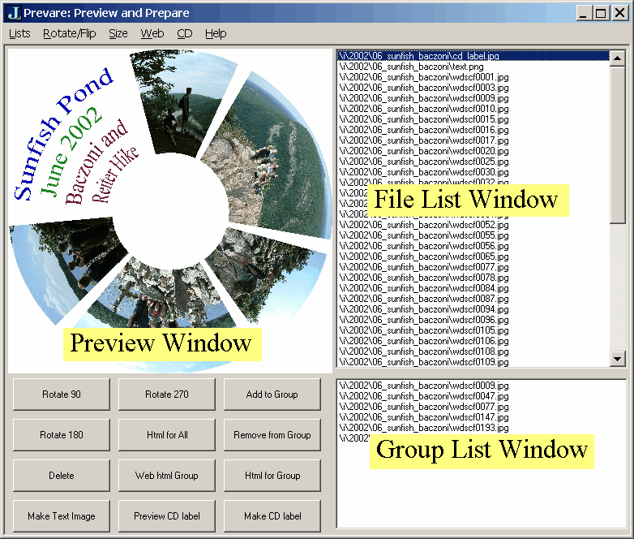

The Prevare Script
by Zachary X. Reiter and Clifford A. Reiter
October 2002

The image3 addon script, prevare.ijs, combines many of the most commonly used facilties of the image addon scripts on an interactive form, as illustrated above.
Typical use:
prevare images_in 'pathname'
which loads the form with the images in the path listed. Any list of image and filenames may be used and supported animation types may be included.
Main features
- A list of the input files appears in a list from which images may be selected
- The list of image files may be augmented by indivdual images or images in a directory (list menu)
- Selected images are previewed; the preview size may be changed (size menu)
- Double clicking on the preview brings up the image in a new new view window.
- Selected images may be rotated, flipped etc, (various buttons and rotate/flip menu)
- Thumbnails are generated whenever files are selected (however, if a thumbnail size of 0 is chosen, they will not be created); default thumbnail bounds are an optional left arguent to prevare (default value is thumbnail bounds of _400 _350).
- Images may be added to (or removed from) a group used for special processing (button and list menu)
- Html galleries may be created for the entire list or the selected group
- Web size (smaller) images and html galleries may be created for the group selection
- Html gallery and web options available via web menu.
- The images in the group may be wrapped onto an annular image in a form suitable for printing on a CD label. (button)
- Raster files giving a small amount of text may be interactively created (button); this is handy for adding simple text labels to the cd label images
Link to:
Image3 Main Help